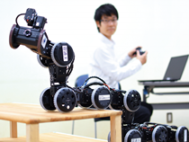

電通大の強み～Ⅱ類～
情報学と理工学の融合系であるⅡ類では、機械・電子工学に高度な知覚・制御・コミュニケーション・人工知能などの情報系の技術を活用し、ロボットの活躍の場を、生産現場を中心としたところから、わたしたちの身近な生活の場へと拡大しようという理念のもとロボティクス研究が盛んに行われています。
日常の営みを支えるロボットに関する研究として、医療福祉分野において活用されるロボットの研究開発が行われています。高性能なロボットの技術により、患者や障がい者の運動機能をサポート、または回復を促す機械を開発・製造し、その機能を評価しています。一つは、義手・義足として運動機能を代替しする機械。もう一つは半身ふずいなど運動不全になった人の補助・回復への研究です。医療福祉分野への貢献を考えた時、求められるのは人の動きとして違和感のないなめらかさを実現する精密さと、人が触れ合えるやわらかさを感じる素材感です。精密な動きが求められる前者については、脳が腕や足の筋肉に送る信号を読み取り、関節部に組み込んだ多数の小型サーボモーターの作動によりなめらかな動きを再現。骨格部を被うカバー用に新素材を開発しています。また後者は、リハビリテーション中の脳波を測定し、脳の働きとリハビリ効果との関連性を追究しています。